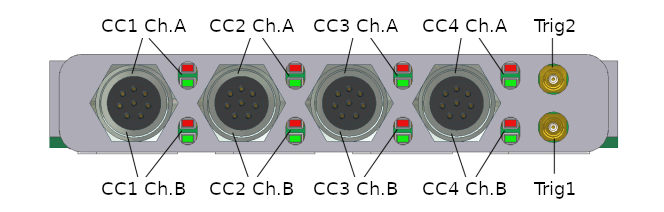
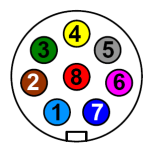
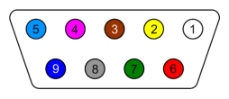

IO623 Pin Mapping — Reference information about the I/O module connector

One bus connector contains both FlexRay channels A and B. The LED indicator states are described in the usage notes.
The trigger lines Trig1 and Trig2 do not provide any functionality yet.

Front view of the 8-pin Binder 712 female connector
| Pin | Signal |
|---|---|
| 1 | Shield |
| 2 | GND |
| 3 | Ch. A: Bus + |
| 4 | Ch. A: Bus − |
| 5 | Ch. B: Bus + |
| 6 | Ch. B: Bus − |
| 7 | - |
| 8 | GND |

Front view of the 9-pin D-sub female connector (on the cable)
| Pin | Signal (combined cable) | Signal Bus A (split cable) | Signal Bus B (split cable) |
|---|---|---|---|
| 1 | - | - | - |
| 2 | Ch. A: Bus − | Ch. A: Bus − | Ch. B: Bus − |
| 3 | Ch. A: GND | GND | GND |
| 4 | Ch. B: Bus − | - | - |
| 5 | Shield | Shield | Shield |
| 6 | Ch. B: GND | - | - |
| 7 | Ch. A: Bus + | Ch. A: Bus + | Ch. B: Bus + |
| 8 | Ch. B: Bus + | - | - |
| 9 | - | - | - |